UniDot：用统一点积原语连接大规模推荐中的序列建模与特征交互
论文 UniDot: A Unified Network for Sequence Modeling and Feature Interaction in Large-scale Recommendation 由 Rongcheng Lin、Yan Sun、Jamey Zhang、Guanglei Xiong、Ivan Ji、Xianjie Chen、Shujian Bu 撰写，作者均来自 Meta。论文于 2026 年 8 月 17 日公开，发表于 KDD 2026 UniRec Workshop，对应论文入口为 arXiv:2608.16797。本轮可以访问 TAAC × KDD Cup 2026 竞赛网站，但未核验到与论文独立对应的代码仓库，因此以下复现判断以论文给出的结构、配置和表格为准。
工业推荐长期把多字段特征交互模型与用户行为序列模型发展成两条相对独立的技术路线，生产系统通常只做松散串联。挑战在于：既要让两类信号在一个可堆叠骨干中逐层共同演化，又要在严格推理时延预算下保留对稀疏、未见过用户—物品组合至关重要的显式二阶交互。
1. 背景和问题
1.1 两条成熟路线为何难以真正合并
大规模广告和内容推荐的排序样本通常同时包含用户画像、候选物品属性、预训练向量以及多域行为历史。传统特征交互路线从 FM、DeepFM、DCN-v2、AutoInt 一路发展到 Wukong、DHEN，重点是在几十到上百个字段之间建立显式或隐式交叉；序列路线则从 DIN、DIEN、DSIN 延伸到 SIM、TWIN、LONGER，重点是让当前候选去检索随时间变化的兴趣。实践中常见的做法是先把序列压成一个兴趣向量，再和静态字段送入交互网络，或先做一轮特征交互再接序列模块。这样的级联能工作，却让两个分支只在边界交换一次结果：静态画像无法在每层反过来改变历史检索，序列信号也不能持续修正字段交互。
UniDot 面对的是竞赛明确提出的 post-click conversion prediction：输入是用户画像、候选物品和四个行为域，标签表示点击之后是否转化，官方以 AUC 排名并设置推理时延约束。这个任务比普通点击率预估更强调稀疏性与时间漂移：正样本少，广告库存快速更新，服务时许多用户—候选组合在训练中从未共同出现。作者因此从因子分解机的视角重新看统一问题：FM 用向量内积估计未见特征对的亲和度；attention 也用 query 与 key 的点积决定检索权重。两者并不是必须由两个完全不同的骨干承担，而可以共享“token 之间做点积”这一原语。
1.2 统一不等于把所有东西塞进一个 Transformer
已有统一架构大致有两类。一类把行为当成更多字段，扩大 token mixer 或 feature-interaction backbone；另一类把画像、历史和目标全部排成一条序列，交给生成式或 decoder-only Transformer。前者可能把时序依赖压扁，后者则容易让非序列字段被位置结构绑架，甚至出现 sequential collapse。UniDot 采取更克制的分离：所有输入先映射到同一维 token 空间，但保留两条状态总线。token-mixing bus 负责用户与物品的非序列字段交互，sequence-retrieval bus 让候选物品 token 跨注意力读取多个历史域；二者在每个 macro-layer 内并行更新，再通过 MLP-Mixer 式 FuseFFN 交换增量。
这篇论文真正的新意不只是“双塔变双总线”，而是另加 FM Highway。深层残差混合器容易把低阶点积信号稀释为难以追踪的隐式表示，UniDot 因而在每层收集候选—各行为域的点积、聚合 Gram、融合域点积以及跨总线用户—物品点积，让这些显式交互绕过 fuser，直接进入最终分类器。统一骨干负责不断改进参与点积的 token，highway 则确保点积本身不被深层混合抹掉。这使“统一”同时具有表示层和读出层两层含义。
1.3 论文想证明什么，以及不能证明什么
作者要回答三个可检验问题。第一，统一 token 空间和逐层并行双总线能否在实际大规模匿名广告数据上超过竞赛基线；第二，显式 FM Highway、共享序列编码、多通道池化、候选感知字段池化分别贡献多少；第三，当资源增加时，扩大稀疏 embedding、扩大 dense backbone、增加互学习路径和增加数据量，哪一条缩放轴更有效。论文给出的榜单、增量表、消融表和缩放表覆盖了这三组问题，证据链比只报最终 AUC 更完整。
边界同样明确。0.83217 是 TAAC × KDD Cup 2026 Industrial track 的离线 test AUC，不是 Meta 线上生产 A/B；论文也明确所有实验在竞赛方基础设施上完成。FuseFFN 的消融甚至出现 AUC 略升、LogLoss 变差，说明“逐层交换状态”这一动机合理，但当前静态 fuser 未得到稳定正向证据。最终提交使用两条 dense path 做互学习并在推理时平均，两路径结果不能被描述成单路径同等成本；单路径虽仍可排第二，但分数是 0.83184。读这篇论文时，应把统一架构、竞赛工程配方与生产可部署性分开评价。
2. 方法
2.1 统一 token 化与双总线状态
UniDot 先把用户字段、候选字段、预训练向量和每个行为位置都投到同一个维度为 $d$ 的空间。非序列 categorical fid 逐位置查 embedding，再由 token 轴上的 NCB 压缩到固定 token budget；LCB 是一层线性 token mixer，NCB 则是两层线性之间加 GELU，二者尾部都有 LayerNorm。用户侧得到 $U$，物品侧故意得到两个视图：较紧凑的 $I$ 进入交互总线，较丰富的 $I_h$ 作为序列检索 query。每个行为域经共享序列管线产生 $H^{(s)}$：
符号解释：$u$、$i$ 和 $S_s$ 分别是用户输入、候选输入和第 $s$ 个行为域；$T_u$、$T_i$、$T_i^h$ 是三类非序列 token 数，$L_s$ 是该行为流长度，$d$ 是统一模型宽度。$U$ 与 $I$ 初始化 token-mixing bus，$I_h$ 初始化 sequence-retrieval bus，$H^{(s)}$ 不在每个消费模块里重复编码，而是在一次 forward 中生成后共享。这样做的关键不是形式统一，而是把最昂贵的序列 embedding 与 trunk 计算从“每层、每消费者重复”改成“一次编码、多处读取”。
普通多字段使用静态 NCB 压缩，但少数无序多值行为 ID 采用 Field-Aware Feature Embedding。候选向量作为 query，对字段中的 $K$ 个值向量计算 DIN 式注意力 $a_k$，再形成 $p=\sum_k a_ke_k$。于是同一字段面对不同候选会生成不同 token，候选相关性集中施加在最有价值的长 ID 列表上，而没有让整个 tokenizer 都变成高成本 target-aware 模块。
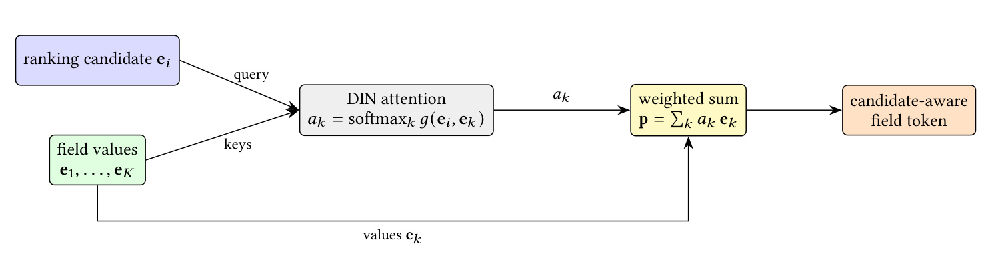
Figure 6 的信息流从左到右很直接：ranking candidate 提供 query，多值字段 $e_1,\ldots,e_K$ 同时提供 keys 和 values，打分函数 $g(e_i,e_k)$ 经 softmax 得到 $a_k$，最后按权重求和成为 candidate-aware field token。值得注意的是，这些列表在字段内部没有时序含义，所以这里不是替代 sequence encoder，而是替代静态的字段压缩。只对 fids 15、63–66、115–118、121、122 等高价值列表启用 FAFE，可以把候选感知计算放在收益最集中的位置。增量表里 FAFE 贡献有限但为正，说明它更像统一骨干上的局部精修，而非主增益来源。
2.2 多域行为序列编码器
每个行为域的事件先逐 fid 查表并拼接，再由位置内 fid-axis NCB 压成统一的 $4D$ 宽度。作者还按 timestamp 把若干真实域交错成一条 merged stream，使跨域先后关系不必等到总线层才被发现。每条真实流与合并流随后经过四阶段 trunk：depthwise Conv1d 用 kernel 21 捕捉相邻行为 burst 和短 N-gram；Conditional Gated SwiGLU 把用户、候选和 embedding 条件只注入 gate，value path 保持纯序列内容；一层带 RoPE 的 causal Transformer 用窗口 $w=128$ 建模更长依赖；最后每个消费者用 Linear→LN→GELU 投出新 view，提交配置每层刷新一次。候选条件只控制“哪些行为通过门”，不直接改写行为内容，这是序列表示可共享又保持 candidate-aware 的核心折中。
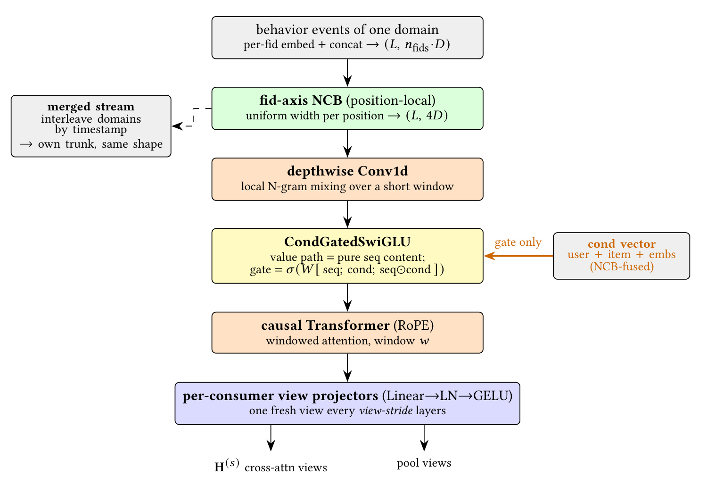
Figure 2 把四种归纳偏置排成明确顺序。最上面的 fid-axis NCB 解决同一事件内字段异构；depthwise Conv1d 只沿时间做廉价局部混合；CondGatedSwiGLU 负责候选相关过滤；causal Transformer 再处理窗口内长依赖。左侧 merged stream 与真实域保持相同 shape，右侧 cond vector 只连到 gate，底部则分出 cross-attention views 和 pool views。这个结构说明 UniDot 并没有用 attention 包办全部序列建模，而是让卷积、门控和注意力各自承担最适合的尺度，随后把同一套编码结果提供给检索总线与交互总线。共享发生在编码结果层，而不是强迫不同消费模块共用同一读出头。
2.3 每层并行双总线、FM Highway 与 FuseFFN
两条总线的初始状态分别为 $Z_{mix}^{0}=[U;I]$ 与 $Z_{seq}^{0}=I_h$。第 $\ell$ 个同构 macro-block 同时读取上层状态和共享序列视图，输出两条新状态以及本层显式交互 $\phi^\ell$：
符号解释：$\ell\in\{1,\ldots,L\}$ 是 macro-layer 编号，$L$ 为总层数；$Z_{mix}^{\ell}$ 和 $Z_{seq}^{\ell}$ 分别是两条总线更新后的 token 状态；$S$ 是真实行为域加 merged stream 的总数，提交配置为 5；$\phi^\ell$ 是本层所有 FM Highway 点积特征的集合。这个递推式强调两条路径在同一层并行计算而非先后级联，层间则由融合增量让画像交互和历史检索共同演化。
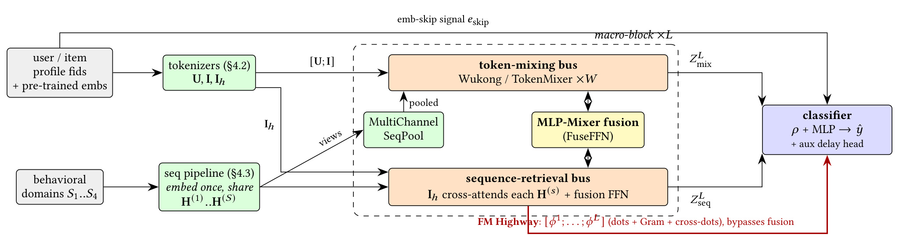
Figure 1 应按三条纵向路径阅读。上方 token-mixing bus 使用 Wukong 的 LCB+FMB 处理用户、物品与 pooled sequence tokens；下方 sequence-retrieval bus 让更丰富的 $I_h$ 跨注意力读取每个 $H^{(s)}$；中间 FuseFFN 每层交换两个分支的状态。红色 FM Highway 不经过 fusion stack，而把各层点积直接送到 classifier，顶部的 embedding skip 也直接到读出端。序列 pipeline 只执行一次却同时服务 cross-attention 和 MultiChannelSeqPool，正是作者控制延迟的关键。图里“共享 token 空间”不是一条单流，而是共享维度、共享序列视图、双状态演化与显式旁路的组合。
对每个序列 view，MultiChannelSeqPool 用当前 mixing-bus 摘要和物品状态生成 $C$ 组独立 sigmoid 权重。通道之间不像 softmax 那样争夺固定总质量，因此可以同时响应不同兴趣簇；代价是加权和幅值不受约束，作者在每个 pooled token 上做 $\ell_2$ 归一化，再把 $S\cdot C$ 个 token 拼接并做 LayerNorm。pooled tokens 进入本层 Wukong，但层间会被 slice 掉，持久 mixing state 始终只保留用户与物品 token。
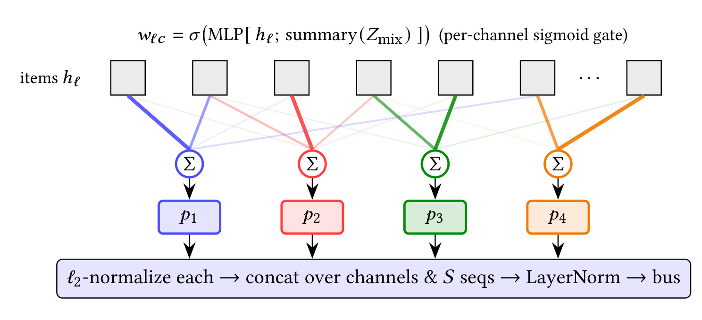
Figure 3 顶部的 $w_c^\ell=\sigma(\operatorname{MLP}[h^\ell;\operatorname{summary}(Z_{mix})])$ 表明第 $c$ 个通道同时看物品状态和当前交互总线摘要。每个彩色通道对所有位置独立加权并求和，得到 $p_1,\ldots,p_C$，随后逐个做 $\ell_2$ 归一化，再跨通道、跨序列拼接。独立 sigmoid 允许一个行为同时支持多个兴趣通道，却也解释了为什么 normalization 不可省略：若不控制模长，活跃历史的 pooled token 会仅凭事件数量压过已由 LayerNorm 标定的画像 token。它是从共享序列视图向交互总线注入信息的低成本通道。
sequence-retrieval bus 则让每个 item token 分别 cross-attend 到 $S$ 个域，得到 $A_0,\ldots,A_{S-1}$；LCB 对这些域输出做线性聚合，小 FFN 再产生 item residual delta。FM Highway 从这里抽取两类代表性点积：
符号解释：$t$ 是 item token 位置，$i$ 是行为域编号，$A_i[t]$ 是候选从第 $i$ 个历史域检索出的向量，$d_i[t]$ 因而是候选与该域的逐 token 亲和度；$\operatorname{attn\_agg}$ 是多个域聚合后的检索结果，$G$ 是 item tokens 与聚合结果之间的完整 Gram 矩阵。除此之外，highway 还收集融合域 dot 与 fusion 后的跨总线 user–item dots。它们在各层被拼接而非求和，使浅层到深层的显式二阶信号都能独立到达分类器。
FuseFFN 将 mixing 输出、pooled tokens 和 retrieval 输出沿 token 轴拼接，先用 NCB 在 token 间非线性混合，再用共享权重的 SwiGLU 沿 channel 混合，最后经两侧零初始化 projection 与可学习 gate 产生 $\Delta_w$、$\Delta_h$。零初始化保证模型开始训练时 fusion 近似 identity，避免未训练的交叉路由一上来破坏两个分支；pool slice 不写回则控制持久状态规模。
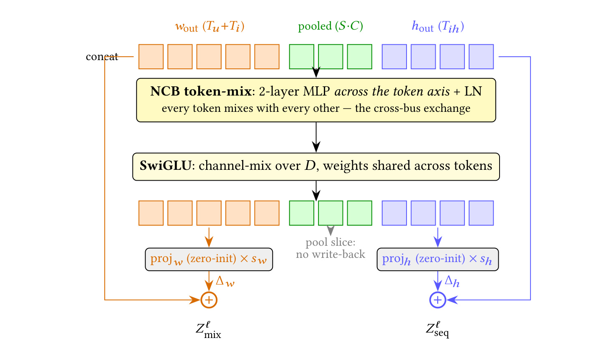
Figure 4 中橙色 $w_{out}$、绿色 pooled、蓝色 $h_{out}$ 先共同经过 token-mix 与 channel-mix，但绿色分支在输出端被切掉，只向本层贡献上下文。橙、蓝两侧分别由 zero-init projection 和 gate 形成 residual delta，再写回 $Z_{mix}^{\ell}$ 与 $Z_{seq}^{\ell}$。该设计把“交换信息”实现为受控残差而非重建总线状态。不过 Table 4 显示删掉 FuseFFN 后 AUC 反而微升而 LogLoss 变差，因此这张图也暴露当前限制：路由结构清楚，却是静态混合，尚不能证明它在 ranking metric 上稳定优于无融合版本。
最终读出不把所有 token 粗暴展平。$\rho$ 先用 NCB 把两条最终总线压成少量 token，同时追加未压缩状态之间的 cross-dot Gram；分类器再拼接全部 $\phi^\ell$ 与高基数 skip embedding：
符号解释：$\hat y$ 是转化概率，$\sigma$ 是 sigmoid；$\rho$ 是最终状态的压缩读出与 cross-dot Gram；分号表示特征拼接；$e_{skip}$ 来自超高基数 fid 的共享 hash 路径。逐层 $\phi^1\ldots\phi^L$ 不相加，是为了不让后层覆盖前层交互；最终两层 MLP 接线性 head，logit 被裁到 $[-20,20]$，兼顾数值稳定性。
2.4 训练目标、多路径互学习与 serving
单路径任务损失由 conversion BCE 和辅助 delay regression 组成：
符号解释：$y\in\{0,1\}$ 是是否转化的标签，$\hat y$ 是预测概率；$\mathcal L_{delay}$ 对 $\log(1+t_{label}-t_{event})$ 做 MSE，只要存在下一动作就参与，不局限于转化正例；$\lambda_{delay}=0.01$。论文称该 mask 覆盖约全部行，而转化正例约 12%，辅助监督量约多 8 倍。它不直接改变 serving 输出，而是迫使 shared representation 学到动作发生速度这一更稠密的时间信号。
最终提交训练 $N=2$ 条 UniDot dense path，它们共享占参数主导地位的 sparse embedding table，但各自保留独立 dense 权重。每条路径既拟合标签，也向其他路径停止梯度后的概率靠拢：
符号解释：$p_n=\sigma(z_n)$ 是第 $n$ 条路径的概率，$D(a,b)=(a-b)^2$ 是概率空间的平方距离，$\operatorname{sg}$ 表示 stop-gradient，防止目标路径被反向拖动；$\lambda_{mut}=20$，从第一轮之后开启。互学习相当于让两条模型相互提供软目标，作者的解释是它们更容易收敛到对未见样本更稳健的平坦区域。训练中 sparse 参数用 Adagrad，二维及以上 dense 矩阵用 Muon，一维 norm/bias 用 AdamW；这套优化配方和架构贡献应分别看待。
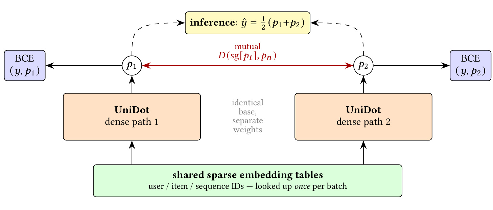
Figure 5 底部绿色块表示用户、物品和序列 ID 只查一次共享稀疏表，上方两条 UniDot dense path 结构相同但权重独立，各自接受 BCE，并通过红色双向 mutual term 对齐预测。最上方给出论文提交的推理聚合：两条概率取平均。这里最重要的成本区分是，互学习训练需要两份 dense compute，双路径推理也约为 2×；若只部署一条路径，仍可享受互学习形成的更好参数最低点，AUC 为 0.83184，成本约为双路径一半。不能把 0.83217 的双路径均值归因到 1× serving，但可以把 0.83184 视作作者实际报告的低成本选项。共享 embedding 节省的是稀疏查表与存储重复，不会消除第二份 dense backbone 的计算。
3. 实验结果
3.1 数据、协议与复现配置
数据来自 TAAC × KDD Cup 2026 Tencent Uni-Rec Challenge 的 Industrial track，是完全匿名化的真实广告日志。第二轮包含 3500 万训练样本与 1200 万测试样本，目标是 post-click conversion，官方指标为 ROC AUC，论文同时报告 LogLoss。142 列被分成 7 类，其中有 54/17 个 user integer/dense fid、17/4 个 item integer/dense fid、7/4 个用户/物品预训练 embedding fid，以及四个各含 9–14 个字段的行为域。fid 116 的基数约 940 万，解释了为什么作者将超阈值字段移到共享 hash table，并把其信号绕过主 tokenizer 直接送到分类器。
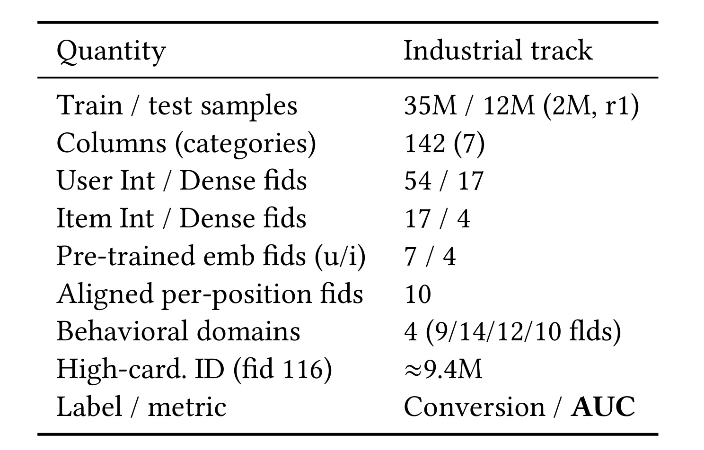
Table 6 不只是数据规模清单，它把几项方法选择与原始输入逐一对上。四个行为域支撑 merged stream 和 $S=5$ 的共享序列视图；10 个 aligned per-position fid 不是独立特征，而是对应多值 user_int 的权重，需要在 pooling 前乘到 embedding 上；高基数 ID 则需要 skip hash。训练/测试的 35M/12M 说明这不是小型公开 benchmark，但所有字段已匿名且没有原始内容或 PII，因此结果能检验统一架构的工程效率，却难以分析内容语义、公平性或具体业务人群上的失效模式。
作者采用三级实验协议。tiny 用 400 万训练、100 万随机 hold-out 和单 GPU 做快速设计筛选；remote 在 3500 万样本上用 4 GPU，并留 10% 做全量验证；final 用全部 3500 万样本训练，不留 hold-out，以 EMA 权重提交。有效 batch 约为本地 3000、4 GPU 约 12000。目标函数为 BCE 加 $0.01$ delay loss，dense 学习率 $4\times10^{-4}$，sparse 学习率 0.1，预热 100 step，使用 bf16 autocast 与 torch.compile。不同表格若来自 tiny、remote 或 final，数值不能直接横向拼成同一条因果曲线。
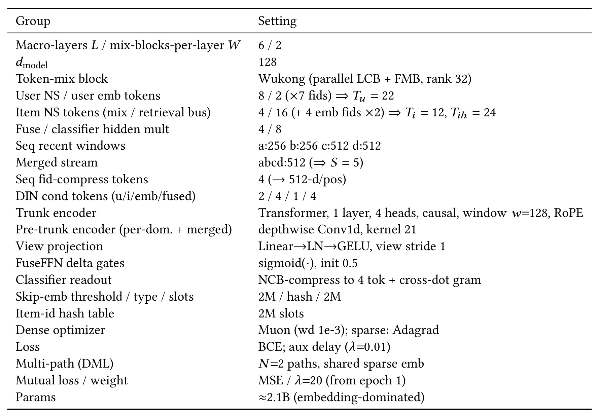
Table 8 把方法符号落实为具体配置：6 个 macro-layer、每层 2 个 Wukong mix block、$d=128$；用户 token 数 $T_u=22$，物品交互视图 $T_i=12$，物品检索视图 $T_i^h=24$；四个真实行为域窗口为 256/256/512/512，merged stream 窗口 512，所以 $S=5$。序列 trunk 只有一层 4-head causal Transformer，前面配 kernel 21 的 depthwise Conv1d。最终参数约 21 亿但由 embedding 主导，dense 两路径合计 120.6M。这个表也提醒复现者，UniDot 的收益来自架构和完整训练配方组合，不能只照抄双总线框图而忽略 token budget、hash、EMA、冷重启与双优化器。
3.2 最终榜单与训练动态
最终 two-path UniDot test AUC 为 0.83217，Industrial track 排名第二；第一名为 0.83254。两者的 绝对 AUC 差是 0.00037，表中按作者口径给出的 Gap to #1 为 0.037%，二者不是同一种数字。只取互学习后的一条 path，AUC 仍有 0.83184，表中相对第一名 gap 为 0.070%，按该榜单仍排第二。这一结果支持“互学习改善了单模型最低点”，但并不等于单路径复现了双路径 0.83217。
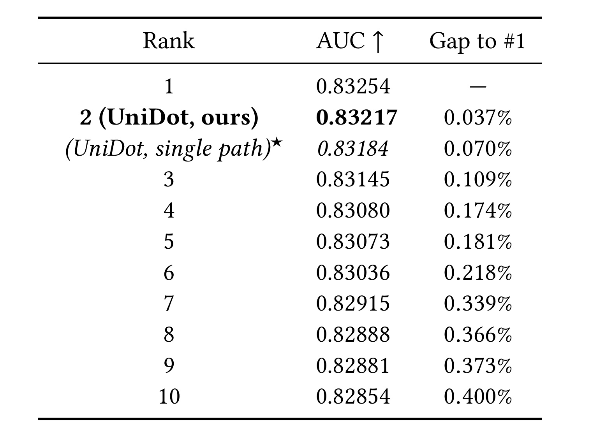
Table 1 同时放入双路径提交与单路径假想 serving，因此能直接检查性能—成本折中。双路径比单路径高 0.00033 AUC，而单路径仍比第三名 0.83145 高 0.00039；平均两条路径所换来的最后一点提升，对竞赛名次有价值，对生产是否值得则取决于流量规模、延迟预算和分数校准。榜单只给离线 AUC，没有线上转化增量、p95/p99 延迟或资源单价，不能从“亚军”推出商业收益。论文报告第 5 个 epoch 的 final AUC 达 0.83217，第 6 个 epoch 回落到 0.83212，也说明继续训练并非单调变好，EMA 与模型选择仍重要。榜单的相邻差距很小，任何复现实验还应报告多次运行波动、方差、随机种子与置信区间。
3.3 增量改进：收益来自何处
作者从竞赛 baseline 0.81398 开始，先替换为 UniDot 就达到 0.82500，表中增量 +1.102，是所有单项中最大的一步。之后 item-id hash、token 数、batch size、更多 FM Highway dots、depthwise conv、delay loss、FAFE、learning rate、EMA 依次把分数推到 0.82993；把 $d$ 从 64 扩至 128 后到 0.83043，再靠 multi-path DML 到 0.83196，最后 all-data retrain 到 0.83217。表中累计提升写为 +1.818%，应理解为作者采用的相对增量记法，而不是 1.818 个绝对 AUC 点。
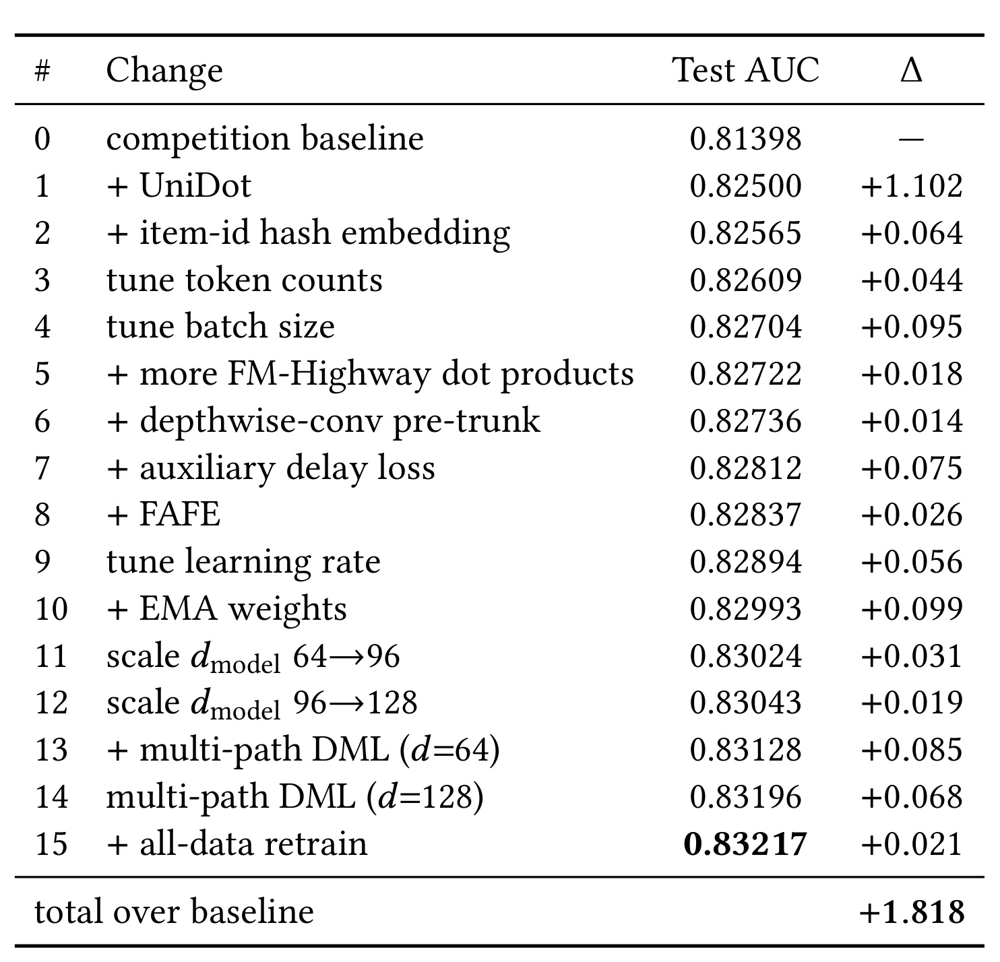
Table 3 最有价值的地方是把“统一架构”与“竞赛调参包”分开。架构替换占最大份额；EMA +0.099、batch size +0.095、DML 两步 +0.085/+0.068 和 delay loss +0.075 也不可忽略。FM Highway 增加更多点积的边际项只有 +0.018，但消融删除整个 highway 的损失更大，二者并不矛盾：初始 UniDot 已含 highway，表中只是在其上加点积。由于各行是按固定顺序累加，后加模块的增量依赖前面配置，不能当作独立 Shapley 贡献；不过它仍清楚显示最终成绩不是靠单一 trick，也不是单纯堆 embedding。若改变加入顺序，各行 delta 很可能随模块交互而重分配。
3.4 消融：最可靠与最不确定的模块
组件消融在 tiny、单路径、$d=64$、同分布随机 hold-out 上完成，完整模型 AUC 0.83657、LogLoss 0.2151。去掉全部 FM Highway 后 AUC 降到 0.83530，表中 $\Delta$ 为 -0.127%，是所列组件中最大退化；只去跨总线 dots 也损失 0.087%，说明显式 user—item 和 candidate—history 二阶信号确实重要。把 token-mixing bus 设为 identity 损失 0.067%，去 sequence cross-attention 损失 0.053%，去 multi-channel pool 损失 0.033%，去 merged stream 损失 0.038%。这些结果共同支持双分支各有增益，但序列 pool 与 cross-attention 之间存在部分冗余。
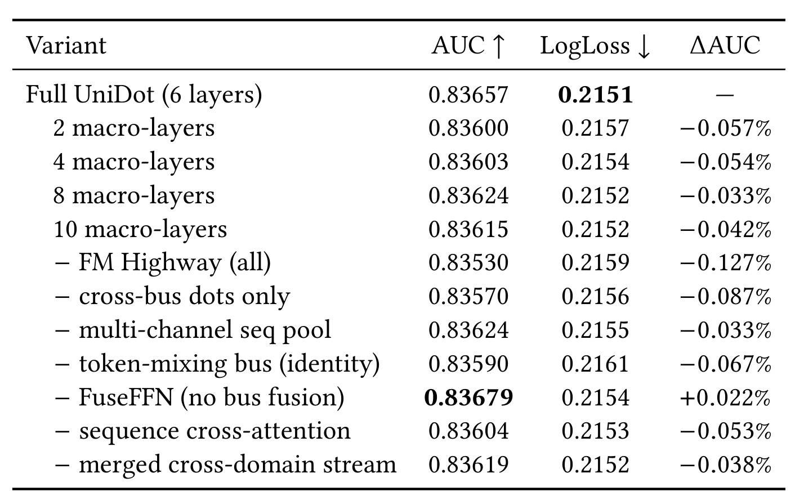
Table 4 还揭示两处不应忽略的反例。层数从 6 改到 8 或 10 都退化，说明在 400 万样本 tiny 设置中深度已经过拟合，不能据此宣称统一 block 可无限堆叠。更关键的是去掉 FuseFFN 后 AUC 从 0.83657 升到 0.83679，即 +0.022%，同时 LogLoss 从 0.2151 变差到 0.2154。作者把它解释为静态 fuser 是当前弱点，未来需要 input-conditioned、二阶路由。这个解释合理但尚未被新实验验证，因此最稳妥的结论是：FM Highway 得到强消融支持；逐层融合的校准收益与排序收益存在冲突，贡献尚不确定。tiny 模式没有误差条，+0.022% 是否超出随机波动也仍未知，需要多种子复验。
3.5 模型、数据与推理成本的缩放
模型缩放表比较了三条轴。把 $d=64$ 的 sparse embedding 容量翻倍没有获益；只扩大 dense width，从 18.8M/5.9 GFLOP 的 $d=64$ 到 36.7M/12.4 GFLOP 的 $d=96$，AUC 提升 0.031%，再到 60.3M/21.2 GFLOP 的 $d=128$，累计提升 0.050%。相较之下，$d=64$ 加第二条 path 后 dense 参数 37.6M、11.7 GFLOP，AUC 提升 0.135%；$d=128$ 双路径为 120.6M、42.5 GFLOP，达到 0.83196，即相对 $d=64$ 单路径 +0.203%。在这组实验里，互学习比单纯增宽更有效，且扩大稀疏表不是瓶颈解法。
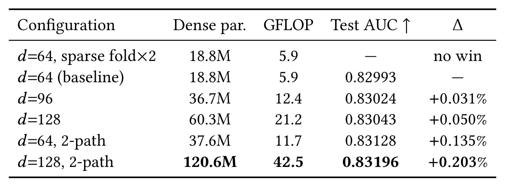
Table 5 把收益和成本放在一起后，可以看到 $d=64$ 双路径的 GFLOP 甚至略低于 $d=96$ 单路径，却得到更大 AUC 增量，这支持“把额外 dense 预算用于相互正则的两份模型”这一竞赛选择。但双路径提升并非免费：最终 $d=128$ 的计算量从单路径 21.2 增到 42.5 GFLOP。参数表中的 21 亿总量主要是 sparse embedding，不能拿它直接代表在线算力；评估部署时应分别核算 embedding memory、dense FLOP、序列共享计算和路径数。论文只给总测试时长，未提供单请求 tail latency 与吞吐分布。
固定 tiny 单路径 $d=64$ 后，数据从 4M、8M、16M 增至 32M，held-out AUC 分别为 0.83657、0.83899、0.84187、0.84396，LogLoss 分别为 0.2151、0.2139、0.2125、0.2115。每次翻倍约增加 0.0025 AUC，四个点尚未看到饱和。作者据此称 unified block 是 data-hungry，并把 production scaling-law 作为未来工作；现有四点只证明竞赛分布内的近似 log-linear 趋势，还不足以外推到更大数量级。
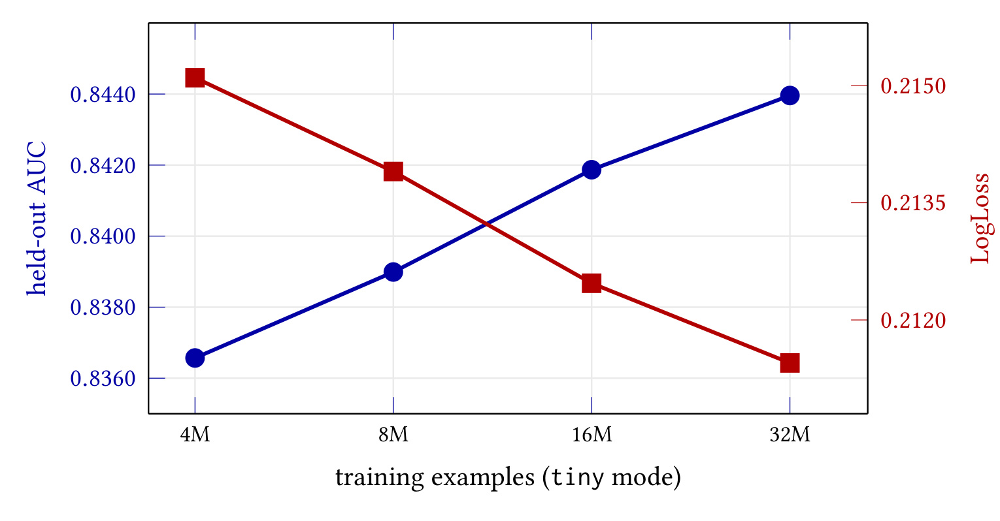
Figure 7 用双 y 轴同时展示蓝色 held-out AUC 上升和红色 LogLoss 下降，四个样本量都落在平滑、近线性的趋势上，说明提升不是某一切分点的偶然跳变。横轴按 $\log_2$ 排列，视觉上的等间距对应数据翻倍，因此“近线性”指相对 log 数据量，而不是每新增一百万样本获得固定收益。曲线只来自 tiny 单路径配置，没有展示 $d=128$ 或双路径下的数据缩放交互，也没有置信区间；它适合支撑“32M 前仍受益”，不适合支撑更强的通用 scaling law。
效率方面，两路径模型在 1200 万测试样本上的端到端推理与评估约 14500 秒，单路径约 7200 秒，均包含一次编译；bf16 autocast 的 AUC 损失小于 0.0001。序列 trunk 一次编码并共享给所有消费者、pool tokens 不写回持久状态、单路径可选部署，都是针对时延预算的设计。不过这些数字来自竞赛批量评估，不等价于在线单请求 latency。缺少 batch、硬件型号、并发、缓存命中和 p99 后，最可靠的工程判断是两路径总时长约翻倍，而不能推断具体生产 SLA。
4. 总结
4.1 我的判断
UniDot 最有说服力的贡献，是把“FM 与 attention 都建立在 token 点积上”从一句类比落实为系统结构：统一 token 空间让操作兼容，双总线避免画像字段和时序历史互相吞没，FM Highway 保留每层可追踪的二阶信号，共享序列 trunk 则限制重复计算。消融中删除 highway 的损失最大，使这一主张有直接支撑。相比之下，FuseFFN 的 AUC 证据并不稳定；因此我会把论文理解为“显式点积旁路 + 共享序列表示”的强方案，以及“静态逐层融合”的有待改进版本，而不是所有组件都已定型的统一终局。
对推荐系统工程而言，最可迁移的不是完整复刻 21 亿参数，而是三项原则：同一行为序列尽量一次编码、向多个下游消费者提供 view；给深层交互网络保留低阶 dot-product shortcut，避免所有信号只能穿过 residual mixer；将资源实验拆成 sparse memory、dense width、路径数和数据量四条轴，分别报告收益。若要复现，应先在单路径 $d=64$ 上完成 Table 4 的受控消融，再验证 $d=96/128$ 和第二路径，最后才叠加 EMA、冷重启与全数据训练，避免把竞赛调参收益误归给架构。
4.2 局限与风险
- 外部有效性有限。 数据只有匿名广告转化任务，全部结果来自竞赛基础设施；没有 Meta 生产流量、在线 A/B、跨平台数据或公开语义特征，无法证明对内容推荐、召回或其他 CVR 场景同样有效。
- 融合模块证据矛盾。 删除 FuseFFN 时 AUC 微升而 LogLoss 变差，论文关于 input-conditioned fuser 的后续方向只是合理假设，不是已经验证的改进。
- 消融协议与最终协议不同。 多数组件消融来自 tiny 单路径随机 hold-out，最终成绩来自全量双路径加 EMA；模块相对排序可能随数据规模、时间漂移和路径数改变。
- 成本披露仍不够上线决策。 论文报告 GFLOP 和整批测试时长，但缺少峰值显存、embedding 通信、吞吐、p95/p99 latency、编译摊销和服务成本；双路径均值的线上可行性仍需单独压测。
- 互学习与数据新鲜度耦合。 epoch 边界重置高基数 embedding、让 dense backbone 跨轮保留，是针对一步时间差的强配方；若线上分布漂移方式不同，冷重启可能丢失有价值的长期 ID 统计。
- 代码与可复现性。 本轮未核验到独立代码仓库，虽然 Table 8 配置充分，但 FAFE 字段选择、数据预处理、hash 冲突、Muon 细节和 fused kernel 仍可能造成实现差异。
4.3 后续跟进
- 先复现 single-path tiny 模式，逐项核验 FM Highway 的 per-domain dots、Gram、cross-bus dots 是否都带来稳定收益，并同时报告 AUC、LogLoss 与多随机种子方差；这是判断主机制是否可靠的最低成本路径。
- 将当前 FuseFFN 替换为由候选和总线状态条件化的稀疏路由或二阶门控，重点观察排序指标与校准指标能否同时改善；现有矛盾正是最明确的研究缺口。
- 做真正的时序外推与线上 shadow test：保留训练—测试时间差，分别测单路径、双路径平均、训练双路径但 serving 单路径的 p99、吞吐和转化校准，确定 0.00033 AUC 是否值得约 2× dense 推理。
- 扩展 scaling study，使数据量、宽度、层数和路径数形成网格，并报告置信区间；只有这样才能判断 Figure 7 的数据趋势与 Table 5 的模型趋势是否可组合，而不只是四个点的局部规律。
总体而言，UniDot 是一篇证据边界相对清楚的工业推荐论文：最终离线成绩强，FM Highway 的消融有说服力，训练与低成本 serving 也被明确区分；同时，融合器、生产外推和代码复现仍留下实质缺口。最值得延续的思想，是让深层统一骨干负责“改进点积两端的 token”，同时让关键点积以显式、逐层、可审计的方式到达预测头。